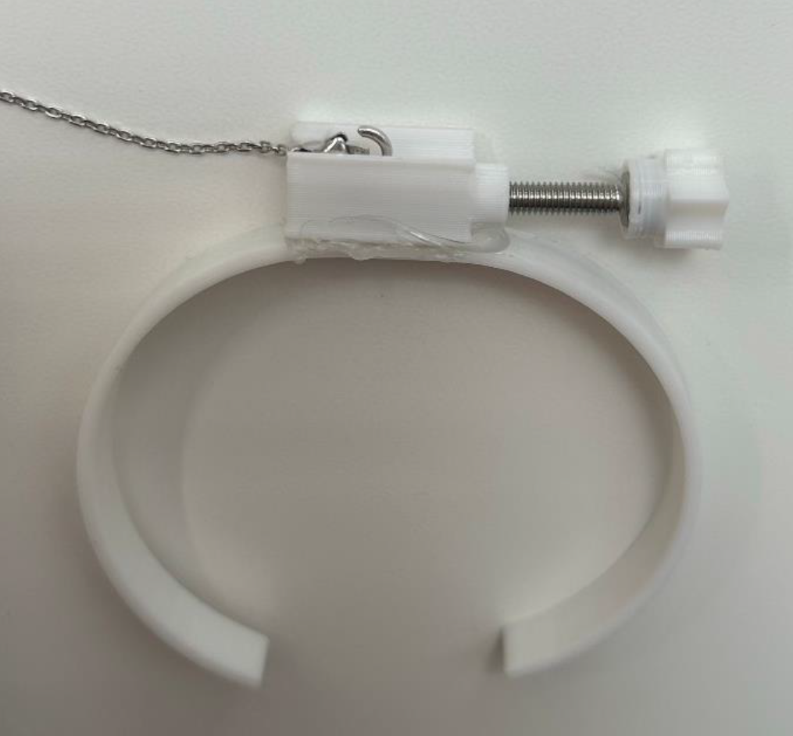
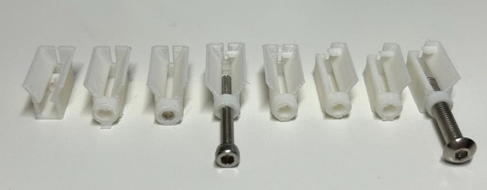
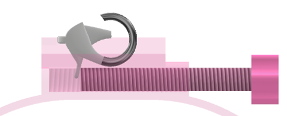

<link rel="stylesheet" href="css/styles.css">
<!-- Navigation Bar -->
     <!-- Social Media Icons -->
     <nav class="nav">
        <div class="nav-content">
            <a class="nav-item active" href="index.html">ABOUT</a> <!-- Link to the main about page -->
            <a class="nav-item" href="experience.html">EXPERIENCE</a> <!-- Link to the new Experience page -->
            <a class="nav-item" href="projects.html">PROJECTS</a> <!-- Link to projects page (if it exists) -->
        </div>
    
        <div class="social-media">
            <a href="https://github.com/dashboard" class="social-link">
                
            </a>
            <a href="https://www.linkedin.com/in/salih-al-tak/" target="_blank" class="social-link">
                
            </a>
            <a href="https://www.instagram.com/_salih_saad/" target="_blank" class="social-link">
                
            </a>
            <a href="mailto:salih.h.altak@gmail.com" class="social-link">
                
            </a>
        </div>
    </nav>
    


    <section class="project-details-section">
        <!-- Header Section: Project Title and Main Image -->
        <div class="header-section">
            <h1 class="project-title">Bracelet Aid</h1>
            <div class="main-image-container">
                
            </div>
        </div>

        
        
    <!-- Content Section: What, How, Results -->
<!-- Content Section: What, How, Results -->
<div class="content-section">
    <div class="content-block">
        <h2>Project Overview</h2>
        <p>
            Bracelet Aid was inspired by the common struggle of putting on bracelets alone, particularly for individuals with limited finger mobility, dexterity problems, or long nails. Many people require assistance to wear jewelry, and some lose the ability entirely as their mobility decreases over time. This project aims to provide independence and ease for those who struggle with this everyday task, creating a solution that restores the ability to wear bracelets without assistance.
        </p>
    </div>

    <div class="content-block">
        <h2>Demo Video</h2>
        <div class="video-container">
            <video controls>
                <source src="images/brace3.mp4" type="video/mp4">
                Your browser does not support the video tag.
            </video>
        </div>
    </div>

    <div class="content-block">
        <h2>Design & Development</h2>
        <p>
            The design process involved multiple iterations to create an effective solution. Initial research measured existing bracelet clasps to determine optimal slot dimensions and tapered angles. Early prototypes revealed a critical rotation issue that prevented proper clasp opening. This was solved by adding a small slot for bracelet chain threading and a security ledge to prevent unwanted rotation. The final design was optimized for injection molding manufacturing and included user research to determine optimal cuff dimensions using thin PLA material for comfort and wide user compatibility.
        </p>
    </div>

         <!-- Gallery Section: Additional Images -->
        <div class="gallery-section">
            
        </div>
    


         <div class="content-block">
        <h2>Results & Testing</h2>
        <p>
            Comprehensive user testing was conducted to evaluate the effectiveness of the Bracelet Aid. Four users were given instructions on product usage and then timed while putting on bracelets both with and without the aid. The results demonstrated consistent time improvements ranging from 9 to 62 seconds when using the aid, with all users successfully completing the task after proper instruction.
        </p>
        <p>
            However, testing revealed a significant usability challenge: 0% of users could intuitively figure out how to use the product without explanation, indicating the need for clear instructional materials. User feedback highlighted that while the design wasn't initially intuitive, it became easy and comfortable to use once understood. Based on this feedback, design iterations were made to improve the screw handle size for better comfort and usability.
        </p>
    </div>

         <!-- Gallery Section: Additional Images -->
        <div class="gallery-section">
            
        </div>

  


        <div class="content-block">
            <h2>Project Team</h2>
            <ul>
                <li>Salih Al-Tak</li>
                <li>Valerie Stephens</li>
                <li>Noor Abdullah</li>
            </ul>
        </div>
        
 
              <!-- Resume Section -->
    <div class="resume-section">
        <a href="./Documents/Bracelet_aid.pdf" target="_blank">
            <button class="resume-button">View Full Project Report</button>
        </a>
    </div> 
    
        <!-- Footer Section: Back to Projects Button -->
        <div class="button-container">
            <a href="projects.html" class="back-button">Back to Projects</a>
        </div>
    </section>
    

    <section class="contact-section">

        <footer class="contact-footer">
            
            <div class="social-links">
                <a href="https://github.com/dashboard" class="social-link">
                    
                </a>
                <a href="https://www.linkedin.com/in/salih-al-tak/" target="_blank" class="social-link">
                    
                </a>
                <a href="https://www.instagram.com/_salih_saad/" target="_blank" class="social-link">
                    
                </a>
                <a href="mailto:salih.h.altak@gmail.com" class="social-link">
                    
                </a>
            </div>
            <p>Thank you for visiting my website</p>
        </footer>
    </section>
